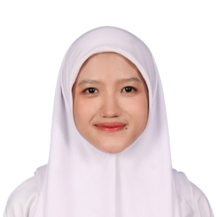

AI Engineering student at Institut Teknologi Sepuluh Nopember with growing technical skills and strongenthusiasm for emerging technologies. Currently developing programming abilities while focusing on problem-solving and analytical thinking
Undergraduate Artificial Intelligence Engineering
Mathematics and Natural Science
- Designed and produced magazine layouts for Adibah, the school's official student publication
- Collaborated with other divisions to deliver a cohesive and visually engaging magazine
- Monitored school gate during bell hours to ensure punctuality and adherence to school uniform regulations
- Conducted inspection of students' belongings upon return from home visits to ensure compliance with school prohibited items policy
- Assisted kitchen staff in distributing meals to students across three daily meal periods (breakfast, lunch, and dinner)
- Distributed iftar snacks to students during Ramadan
Help create stage decorations
Helped and supported participants during the event and took part in evaluating them
Helped new students understand the materials during the event and guided a small group together with another mentor
Accompanied and engaged children from UPTD Kalijudan in recreational play activities